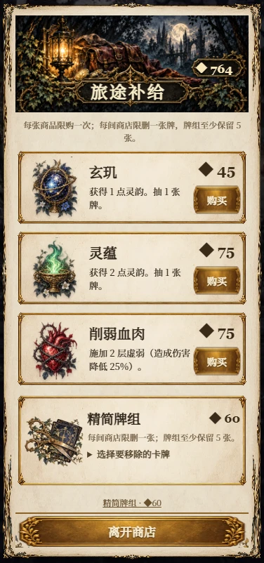

BLACK FOREST · UI ART INTEGRATION · 2026.10.25
按 AI 原稿，还原插画界面的层次
本轮重做了大型页眉、彩色商品小景、剪刀删牌插画、资源徽章、成就插画、金色与靛蓝按钮、藤叶四角。下方可把原稿、上一版和本轮实装放在一起核对。
AI 美术设计稿
概念图用于确定视觉。AI 稿中的示例卡牌、数值、成就和路径不作为规则；游戏实装使用已有规则与真实字体。
原稿与本轮实装对照
请选择界面。左侧为原始 AI 稿，右侧为真实游戏界面；规则文字与数值使用现有游戏数据。对照不会改动存档。
原始 AI 视觉设计
游戏实装 · 真实字体与交互 游戏中的真实界面
实景由独立测试存档采集。长内容在中间滚动，底部返回和确认操作固定；费用不足的手牌仍能查看。
游戏正在使用的 AI 素材
完成范围
五类功能弹窗均已接入；标题页收藏 / 存档入口、桌面阅读侧栏、教学入口、启动加载和提示层同步统一材质。商店保留商品限购、金币校验、每店限删一张和至少五张牌的规则。本轮素材约 3.0 MiB，含 18 个商品母题、8 幅成就图、4 组插画页眉、3 枚资源徽章及独立边框组件。运行包清单已覆盖。